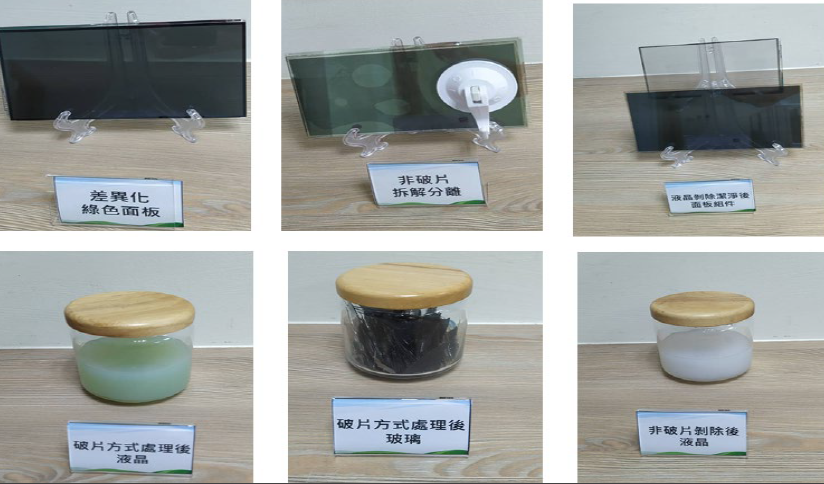

| 面板非破片高價材料循環製程 Liquid crystal panel non-fragmented high-priced material recycling process |
| 本技術以非破片方式進行液晶面板材料循環回用，可將面板 玻璃組件進行完整拆解，取得完整無破損的組件，液晶材料 可進行柔性剝除，有效增加液晶材料的萃取回收率，並降低 液晶材料純化的難度，並可將取得之組件及液晶材料重工組 立回用，使 70%以上之面板組件得以循環回用，提升整體 循環應用價值。 This project uses a non-fragmentation method to recycle the liquid crystal panel material. The panel glass components can be completely disassembled to obtain complete and undamaged components. The liquid crystal material can be flexibly peeled off, which effectively increases the extraction recovery rate of the liquid crystal material and reduces the It is difficult to purify the liquid crystal material, and the obtained components and liquid crystal materials can be re-assembled and reused, so that more than 70% of the panel components can be recycled, and the overall recycling application value can be improved.  |
| 技術洽詢聯絡人：許宗洲 聯絡電話：03-573-2589 手機:0923122995 E-mail：Tjshiu@itri.org.tw |